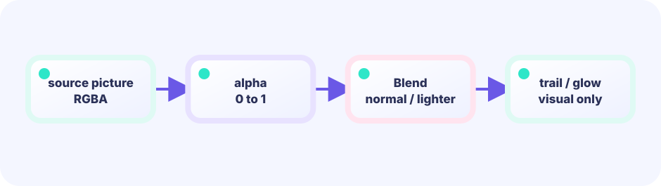

History
Remember recent positions.
trail []vec
★★★☆☆ / PLAYABLE
Lower alpha (opacity) and the back shows through. Stack faint copies at past positions and you get a speed-suggesting afterimage—motion blur.
This lab also sits on the LEVEL 01 boundary between Update (state) and Draw (pixels). Here we dig one layer deeper into projecting the same state through different renderers.
PLAYABLE / LIVE GO + MOUSE
Change opacity and the number of afterimages with buttons. More faint copies make a longer motion tail.
FIRST-TIME READER
Find where this one line is used, then follow how its value changes on screen. This is the shared game-state boundary: add rules in Update, then choose an independent presentation in Draw. The numbered steps below add one system at a time.
ONE RULE TO TRACE
Match the explanation to this line, then test the change in the game.
op.ColorScale.ScaleAlpha(.5)
DEEP DIVE / ALPHA
No hard math. Remember recent positions and draw older ones fainter (smaller alpha). Near the head is solid, the tail is transparent. Draw order makes the flow.
Remember recent positions.
trail []vec
Older = smaller alpha.
ScaleAlpha(i/len)
Draw oldest first for the trail.
DrawImage ×N
TRY IT / ALPHA
Change opacity and the number of afterimages with buttons. More faint copies make a longer motion tail.
IN THE REAL GAME
Loop the position history and lower alpha for older copies.
if len(trail) == 0 {
return // 0個なら割り算も描画もしない
}
for i, p := range trail {
op := &ebiten.DrawImageOptions{}
op.GeoM.Translate(p.x, p.y)
a := float32(i+1) / float32(len(trail))
op.ColorScale.ScaleAlpha(a) // 古いほど薄い
screen.DrawImage(sprite, op)
}WHY ALPHA?
Stacked translucency stays darker where the path passed.
WHY ORDER?
The last thing drawn is on top. Order decides the look.
TRY NEXT
Drive alpha 1→0 to make a defeated enemy melt away.
FEEDBACK